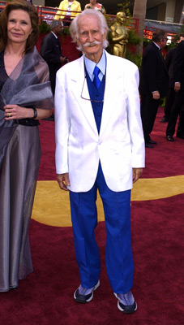
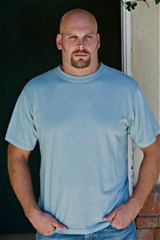
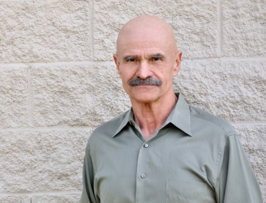
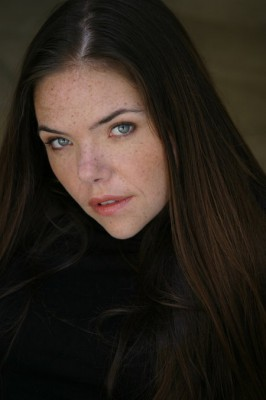

#5224 Herbie 6 - Fully Loaded - Ein toller Käfer startet durch
Alternativ: Herbie Fully Loaded


 IMDB-Wertung: 4.8 / 10
IMDB-Wertung: 4.8 / 10  Metascore: 0
Metascore: 0 
Herbie ist wieder da! Und der eigensinnige VW Käfer mit Herz und Seele hat nicht nur deutlich mehr PS als früher unter der Haube und so manchen neuen Trick auf Lager, sondern auch einen neuen Besitzer. Oder besser gesagt: eine neue Besitzerin. Maggie Peyton. Und Maggie hat einen Traum. Sie will das größte Autorennen des Jahres gewinnen und NASCAR-Champion werden. Und das mit einem alten Volkswagen! Anfangs wird sie verlacht, doch dann zeigt Herbie der Konkurrenz schnell, was eine Harke ist. Doch mit dem Erfolg wächst auch die Missgunst der Neider, die dem Geheimnis von Maggies Nummer 53 auf die Spur kommen wollen - auch mit unlauteren Mitteln. Aber sie haben nicht mit Maggies Intelligenz gerechnet. Und mit Herbie, der sich nichts gefallen lässt, schon gar nicht!
Jahr: 2005
Dauer: 96 Minuten
FSK: 0
Land: USA Studio: Buena Vista PicturesTonspuren: DD5.1 - ,
Untertitel:
Auflösung: 720p (1280x696) Größe: 2949 MB
Genre: Komödie, Abenteuer, Fantasy, Familie, Liebe, Sport
Regisseur: Angela Robinson
Drehbuch: Amy Heckerling
Soundtrack:
Darsteller:
 Lindsay Lohan als Maggie Peyton
Lindsay Lohan als Maggie Peyton Michael Keaton als Ray Peyton Sr.
Michael Keaton als Ray Peyton Sr. Matt Dillon als Trip Murphy
Matt Dillon als Trip Murphy Breckin Meyer als Ray Peyton Jr.
Breckin Meyer als Ray Peyton Jr. Justin Long als Kevin
Justin Long als Kevin Cheryl Hines als Sally
Cheryl Hines als Sally Jimmi Simpson als Crash
Jimmi Simpson als Crash- Jill Ritchie als Charisma
 Thomas Lennon als Larry Murphy
Thomas Lennon als Larry Murphy Jeremy Roberts als Crazy Dave
Jeremy Roberts als Crazy Dave E.E. Bell als Beeman
E.E. Bell als Beeman- Peter Pasco als Juan Hernandez
-  Patrick Cranshaw als Jimmy D.
 Scoot McNairy als Augie
Scoot McNairy als Augie Amy Hill als Female Doctor
Amy Hill als Female Doctor Jim Cody Williams als Monster Truck Driver
Jim Cody Williams als Monster Truck Driver Jeff Gordon als Jeff Gordon
Jeff Gordon als Jeff Gordon- Jimmie Johnson als Jimmie Johnson
- Stuart Scott als Stuart Scott
- Robert Ben Garant als Director
-  Tim Sitarz als Security Guard
 Bruno Gunn als Bald Trip Fan
Bruno Gunn als Bald Trip Fan- Mary-Bonner Baker als Female Fan
- Mark Deklin als ESPN Reporter
 Scott Martin Gershin als Herbie Vocalizations
Scott Martin Gershin als Herbie Vocalizations- Cass Asher als Pit Crew Chief , uncredited
 Anna Faris als Cindy Campbell , archive footage, uncredited
Anna Faris als Cindy Campbell , archive footage, uncredited-  Paul Grace als The Herbie Guys , uncredited
- Phillip Gramm als Team Target Pit Guy , uncredited
 Herbie als Herbie , uncredited
Herbie als Herbie , uncredited- Jeff Lam als The Herbie Guys , uncredited
- Sean LoGrasso als Male Fan , uncredited
- Rana McAnear als Trip Murphy Fan , uncredited
-  Danielle McKee als Female Fan , uncredited
- Michael Molthen als Herbie's Pit Crew , uncredited
- A.J. Presley als Male Fan , uncredited
- Erik Rusnak als Race Official , uncredited
 Gary Sievers als Racing Fan , uncredited
Gary Sievers als Racing Fan , uncredited- Frederick Martin Smith als Valvoline Owner , uncredited
- Alanna Ubach als Reporter , uncredited
- Mario Larraza als Miguel Hernandez
- Allen Bestwick als Allen Bestwick
- Benny Parsons als Benny Parsons
- Dale Jarrett als Dale Jarrett
- Tony Stewart als Tony Stewart
- Bob Dillner als Speed Channel Reporter
- Andy Hillenburg als Crew Chief
- Edmund L. Shaff als Dean
- Caroline Limata als Female Fan
- Rocky Soto als Trip Murphy Fan
Datei: X:\6-Hexalogie(A-Z)\Herbie\Herbie 6 - Fully Loaded - Ein toller Käfer startet durch (2005, FSK0, 1280x696).mkv seit 02.01.2017
Festplatte: HD Collection-3(N-Z)-6(A-Z)
 Es gibt insgesamt 9 Filme in der Gruppe '6-Hexalogie(A-Z)\Herbie'
Es gibt insgesamt 9 Filme in der Gruppe '6-Hexalogie(A-Z)\Herbie'